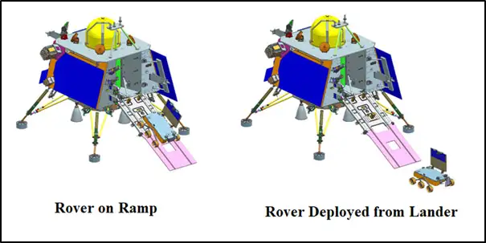

Chandrayaan-3 is a follow-on mission to Chandrayaan-2 to demonstrate end-to-end capability in safe landing and roving on the lunar surface. It consists of Lander and Rover configuration. It will be launched by LVM3 from SDSC SHAR, Sriharikota. The propulsion module will carry the lander and rover configuration till 100 km lunar orbit.

The mission objectives of Chandrayaan-3 are:
Chandrayaan-3's primary mission objectives are to showcase India's capability for a secure and gentle lunar landing and successful rover operations. It emphasizes the importance of soft landings on the Moon's surface and aims to conduct in-situ scientific experiments with the rover. This mission represents a significant step forward in India's lunar exploration program, building on the lessons learned from previous missions like Chandrayaan-2.